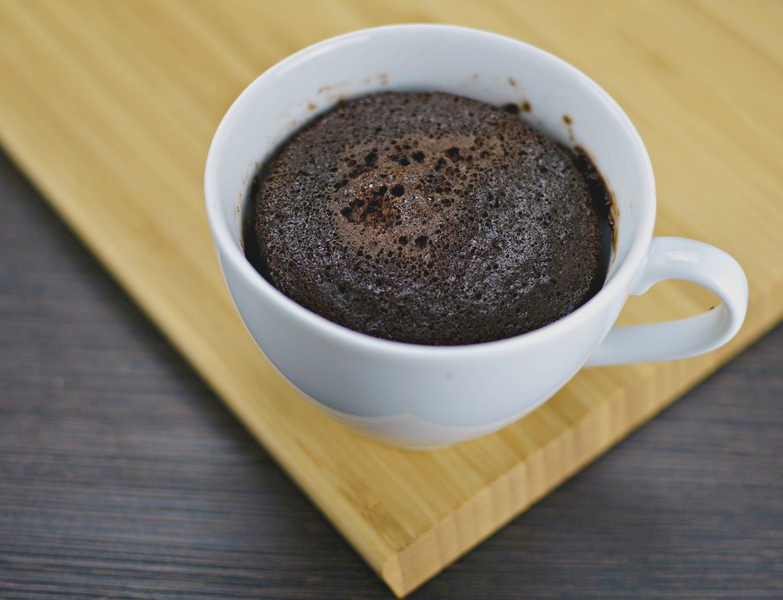

Inicio
Chocolate Mug Cake

Descripción
Este postre es el rescatista oficial de los antojos nocturnos o los días lluviosos. Es una mini torta individual que se cocina al vapor dentro de su propia taza, lo que le da una textura sorprendentemente esponjosa, húmeda y reconfortante. Al salir calientito del microondas, inunda la cocina con un aroma a cacao irresistible. Su gran atractivo es la inmediatez: ofrece toda la satisfacción de un bizcocho de chocolate recién horneado, tierno y con los bordes suaves, pero listo en una fracción del tiempo y sin ensuciar moldes.
Ingredientes:
- 4 cucharadas de harina de trigo
- 2 cucharadas de azúcar
- 2 cucharadas de cocoa o cacao en polvo
- 1 huevo
- 3 cucharadas de leche
- 1 cucharada de aceite (o mantequilla derretida)
- Un cuarto de cucharadita de polvo para hornear
Preparación:
- Mezcla los secos: En una taza grande (apta para microondas), agrega la harina, el azúcar, la cocoa y el polvo para hornear. Revuelve bien con un tenedor.
- Agrega los líquidos: Añade el huevo, la leche y el aceite. Bate todo muy bien dentro de la taza hasta que quede una masa homogénea y sin grumos. (Tip: si quieres un corazón derretido, hunde un trocito de chocolate en el centro de la masa ahora).
- Cocina: Lleva la taza al horno microondas y cocina a potencia alta durante 1 minuto y 30 segundos (el tiempo puede variar unos segundos según el microondas).
- Disfruta: Deja reposar un minuto para no quemarte y cómetelo directamente de la taza. ¡Le va increíble una bola de helado de vainilla encima!